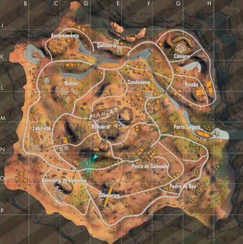

MAPAS

MAPA BERMUDA
O Mapa Bermuda foi o primeiro Mapa, chegou junto com o a versão beta do jogo,
mas passou e ainda passa por modificações em suas cidades a cada atualização do jogo.
Factory, Peak e Clock Tower são cidades bastantes disputadas, elas tem alta concentração de loot e são pontos de batalhas constantes!
O mapa possui muitas áreas de loots: Observatory, Cape Town, Factory e Ilha Sentosa são muito procurados na hora da aterrissagem por oferecer uma boa quantidade de armamentos e itens para os jogadores.
O servidor avançado de Free Fire conta com a versão 2.0 de Bermuda, que está em fase de testes para os jogadores que tem acesso ao servidor.
É esperado que essa nova versão faça parte do jogo num futuro próximo após o surgimento da campanha Plano Bermuda, que deu pequenas pistas de como o novo mapa irá se parecer.
A versão 2.0 conta com quatro locais diferentes: Academy, Fisherman Creek, Hydrapower e Yagami Garden.
/i.s3.glbimg.com/v1/AUTH_bc8228b6673f488aa253bbcb03c80ec5/internal_photos/bs/2020/z/s/nZRgF7TRAGLogZZEVK7g/bermuda-2.0.png)
MAPA BERMUDA 2.0
O bermuda 2.0 é uma versao modificada do mapa bermuda principal,
ele em questão de tamanho comparado ao mapa bermuda principal ele é bem menor,
mas levando em questão o bermuda 2.0 é bem mais moderno que o principal,
bem mais variedades de casa, mais árvores espalhadas pelo mapa, e bem menos morros comparado ao bermuda principal.
O bermuda 2.0 foi lançado do dia 13 de agosto de 2020 para os jogadores, mas apenas no modo contra squad,
e com essa adiçao do bermuda 2.0 vieram tambem novas cidades adicionando as cidades:
Academy, Fisherman Creek, Hydrapower e Yagami Garden.
No entanto quando lançou o mapa Bermuda 2.0 estava em fase teste ainda e era por tempo limitado.
A Garena(empresa dona do free fire)so veio a publicar o mapa permanente no jogo no dia 4 de fevereiro de 2021,
depois desse periodo os jogadores poderiam jogar no mapa bermuda 2.0 em qualquer modo de jogo.

MAPA PURGATÓRIO
Purgatório foi o segundo Mapa a chegar no Free Fire, uma ilha grande, onde os jogadores deverão percorrer grandes distâncias em descampados enormes até chegar próximo de algum "cover".
Brasília, Central e MoatHouse são os lugares mais perigosos do Purgatório, quer se manter vivo por mais tempo sem se arriscar? Fique longe desses lugares!
Purgatório é um mapa que divide opiniões dentro da comunidade de Free Fire. Enquanto alguns jogadores se queixam de sua longa extensão e alta variabilidade topográfica e de obstáculos (montanhas, morros e árvores),
outros consideram este o melhor mapa do jogo por permitir diferentes possibilidades, tanto para quem quer engajar em embates rapidamente ou jogar mais cautelosamente.
É um mapa que permite tanto a "rushada" quanto a "camperagem". O mapa foi introduzido no jogo em 2018, sendo o segundo do battle royale da Garena.

MAPA KALAHARI
Já o Mapa Kalari é o mais novo, chegando no Free Fire na atualização de Dezembro/2019. É o mapa do Deserto, bastante solicitado pela comunidade de jogadores.
A maior novidade em mapa de Free Fire é Kalahari, que foi introduzido no battle royale no último mês de fevereiro. O nome foi inspirado no deserto africano de 900 m², com sua maior parte compreendida no território de Botswana, no sul do continente.
Seu nome origina de uma etnia local e significa "lugar vasto" - curiosamente, Kalahari é o menor dos três mapas do Free Fire, contendo apenas 16 km². Isso permite que os combates sejam engajados em tempo mais curto, tornando-o um mapa muito dinâmico e cheio de ação.
O Kalahari é composto por 13 cidades sendo elas:Assentamento, Santuário, Camara, Prisão, Porto Seguro, Playground, Ruínas, Labirinto, Cemiterio de elefante, Posto de Comando, Pedra do baú, Refinaria e Submarino.